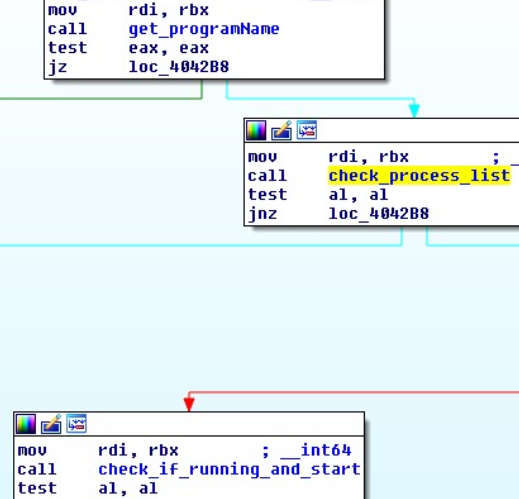

Fysbis backdoor analysis
Reportedly the Fysbis backdoor has been used by the Sofacy(APT28) group in targetted attacks against defense organizations and East European governments. The malware has both 32 and 64-bit versions, but in this article we will show snippets from the latter one.
As the program starts, it will check if it's not already running and if not, it will install and start itself.

To detect if it's running it will first grep the process list:
Next it will try to gain root privileges. If it succeeds, the drops itself in the /bin folder with the name rsyncd, otherwise it will choose the ~/.config/dbus-notifier with the name dbus-inotifier. The malware checks if it is set to start automatically at startup. It does that by searching the active process list for the systemd process. If this process is found, it will recursively search the "/usr/lib/systemd/" folder and check every file for the "/bin/rsyncd" string.
If it doesn't have root privileges, it checks the ~/.config/autostart/ directory for the dbus-inotifier file.
If the malware isn't running and the program has root privileges it will try to create a service file and launch itself.
To do that it will create the rsyncd.service unit configuration file in /usr/lib/systemd/system/
Afterwards it installs & launch the service by executing the following commands:
|
ln -s '/lib/systemd/system/rsyncd.service' '/etc/systemd/system/multi-user.target.wants/rsyncd.service'
|
| systemctl daemon-reload to reload the service |
If the backdoor doesn't have root privileges, it creates the ~/.config/autostart/dbus-inotifier.desktop file with the following contents:
It creates the directory /usr/lib/cva-ssys to store its files its files in it:
In this folder it stores a sqlite3 database (named My_BD) where it stores configuration data. The configuration is stored in a binary format in a table called chnnl:
The table has the following format:
The backdoor will contact the C2 (command and control) server to register the infection and wait for commands:
The malware will send a request like to the following:

The backdoor allows for the following operations:
| control the main module that handles configuration data and plugins |
| module that opens a remote shell and execute arbitrary commands |
| module that interracts with the file system (example: exfiltrate data, set staging area, run additional malware, etc) |
Commands supported by the shell module
Commands supported by the filesystem module
Here you can find a python tool to detect this backdoor:
File information:
| SHA256 | 8bca0031f3b691421cb15f9c6e71ce193355d2d8cf2b190438b6962761d0c6bb |
| SHA1 | 9444d2b29c6401bc7c2d14f071b11ec9014ae040 |
| MD5 | 364ff454dcf00420cff13a57bcb78467 |
This blog post has been created for completing the requirements of the SecurityTube Linux Forensics Expert certification: http://www.securitytube-training.com/online-courses/linux-forensics
Student ID: LF-2095